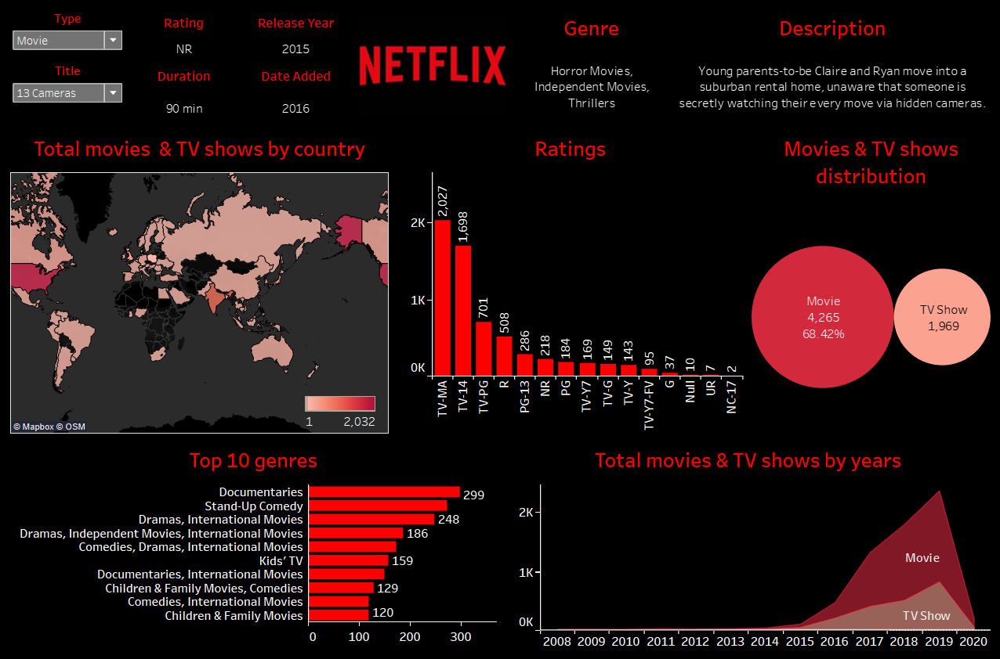

In this project I cleaned housing data using Microsoft SQL Server Managament Studio. I standardized the date format by converting the date type in a new column, updated a text column by utilizing a Case Statement, populated an address in null fields by using a join, separated an address into separate address, city, state fields using substring and parsename functions, removed duplicate values with the use of a CTE, and dropped unused columns.
In this project I used data from 2020 and 2021 to explore the global impact of COVID19. Skills used include: Joins, CTE's, Temp Tables, Window Functions, Aggregate Functions, Creating Views, and Converting Data Types. Data from queries and the new views were utilized to visualize the data on Tableau, which can be viewed here.

In this project I made a Tableau Dashboard comparing netflix movies and tv shows by country, genre, rating, and distribution. I also made a filtering section allowing the user to filter through Netflix movies and tv shows while instantly showing the year selected field was released, added to netflix, the rating, genre, and description.

In this project I made an Excel Dashboard by cleaning my data in excel, making three PivotTables and PivotCharts, then constructing a Dashboard with the PivotCharts and Three Slicers with reported connections to each PivotTable.
Check out my Tableau Public Profile where you can see my dashboards, Workout-Wednesday submissions, and Back2VizBasics exercises as I complete them.